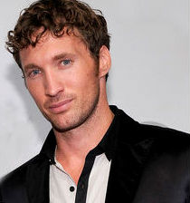

Ryan Blair (born July 14, 1977) is an American entrepreneur and author. He is the co-founder and chief executive officer of themulti-level marketing company ViSalus Sciences,a subsidiary of the publicly traded company Blyth, Inc. In 2011 he wrote a book titled Nothing to Lose, Everything to Gain: How I Went from Gang Member to Multimillionaire Entrepreneur which reached The New York Times Best Seller list for hardcover business books. Ernst & Young named Blair as Entrepreneur of the Year in 2012.
Blair was raised in Southern California.As an adolescent, Blair suffered from Attention Deficit Disorder and struggled with his father’s violent behavior and addiction to methamphetamines.He dropped out of high school in the 9th grade, left home, and became a gang member in his home-town of Los Angeles. He lived in a toolshed for a year and was arrested 10 times by the time he was sixteen, facing a four-year jail sentence for his last arrest.When he was 18, Blair’s mother began dating a successful real-estate entrepreneur who became Blair’s mentor and gave him his first job at Logix Development, a computer technical support provider. At age 21, after serving as vice president of Logix Development he founded the technical-support firm 24/7 Tech.
In 2005 Blair became the CEO of the multi-level marketing company ViSalus Sciences. In 2008, ViSalus was in debt and facing bankruptcy. That year the company was acquired by Blyth Inc., with Blair remaining as CEO. Within 16 months the company went from $6 million in debt to $150 million in revenue.As of 2012, ViSalus was valued at $600 million.[16] Revenue subsequently declined and the company operated at a loss for 2013 and the first two quarters of 2014.
In 2011, Blair released an autobiography, Nothing to Lose, Everything to Gain: How I Went from Gang Member to Multimillionaire Entrepreneur. The book was ranked 3rd inThe New York Times Best Seller list for August 2011 and was a number one New York Times Hardcover Business Book bestseller in September of that year. In 2012 and 2013, Blair contributed several articles to Forbes Magazine's website.